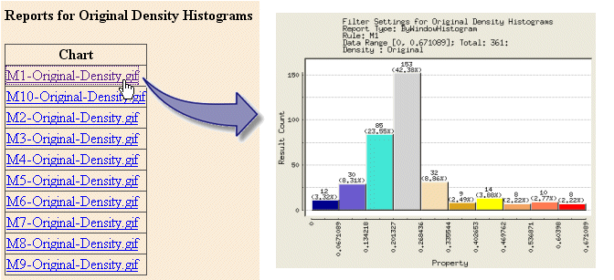
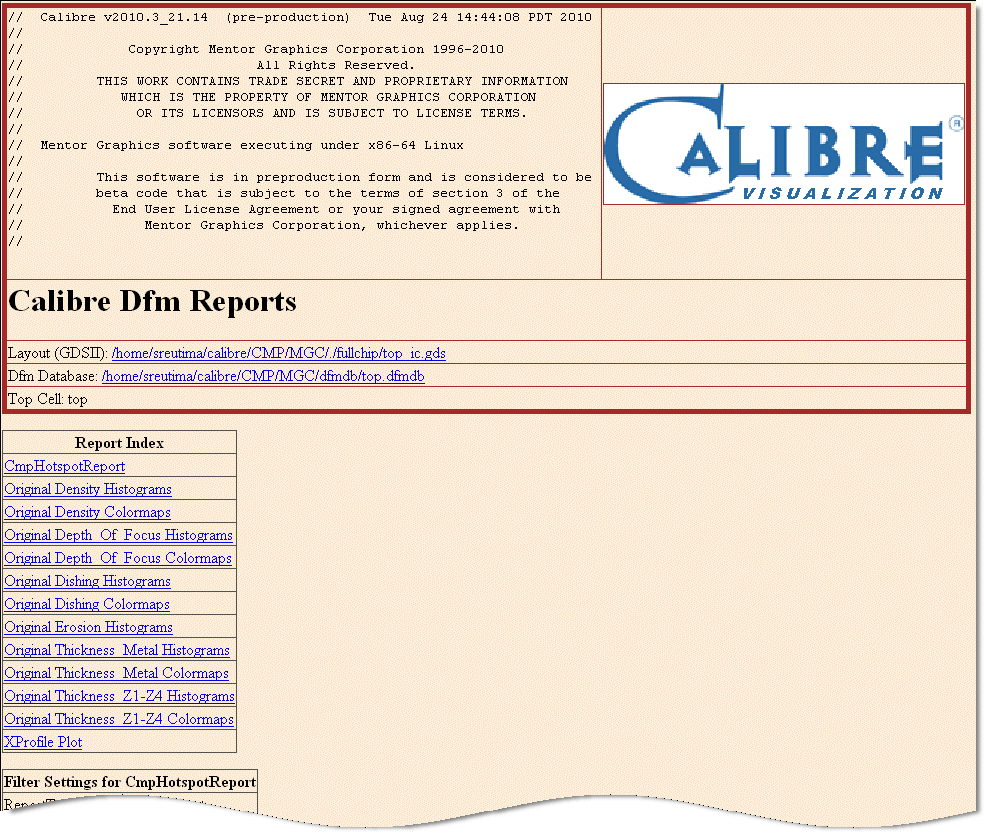

If desired, you
can export tables, charts, colormaps and histograms that can be
viewed in HTML format.
To do this, you must create a configuration
file that follows the format described in “DFM HTML Reporting”
in the Calibre RVE User’s Manual.
The “CMP Batch Reporting” section contains example batch
reporting configuration files that you can modify for use with your
design. The following procedure assumes you are creating a new configuration
file from scratch.
Procedure
- Create a new file in your
working directory named rve.cfg. This file
will be used as the batch reporting configuration file.
- In the file, create a Common
section. This section defines default values for key names that
are not specified in other sections. For example:
[Common]
GroupsToInclude = *
RulesToInclude = *
BinsToInclude = *
MetricsToInclude = *
Rows = *
Sort = Descending
GroupBy = Metrics
OutputFormat = html, csv, chart
- Create a new section for each
report that you want to output.
Section names are enclosed
in brackets []. The ReportType key name specifies the type of report
that is generated. Filtering can also be applied in a number of
ways, including using the RulesToInclude, BinsToInclude, and MetricsToInclude
key names.
For example, the following
section:
; Create Density Histograms
[Original Density Histograms]
ReportType = ByWindowHistogram
BinsToInclude = "Original"
MetricsToInclude = "Density"
results in the report shown
in Figure 1, which displays the Density histograms
in the Original bin for each metal layer.
Figure 1. Reports for Original
Density Histograms
- Create X and Y profile plots.
Creating X and Y profile plots
in batch reporting is unique to the CMP analysis flow. You can specify
the direction of the plot and location of the cut line, then generate
the plot.
To do this, you can include
the following in your batch configuration file:
//For X direction
[REPORT_NAME]
ReportType = ByWindowColorMap
XProfileInclude = <profile line coordinate>
//For Y direction
[REPORT_NAME]
ReportType = ByWindowColorMap
XProfileInclude = <profile line coordinate>
For more information, refer
to “DFM HTML Reporting”
in the Calibre RVE User’s Manual.
- Run Calibre as follows:
calibre -rve -dfm dfmdb -report config_file \
-outputdir output_directory -cmp
where dfmdb is
the name of the DFM database, config_file is
the name of the batch reporting configuration file, and output_directory is
the name of the directory that is created to contain the output
files.
- When the run is complete,
open index.htm in the./reports directory.
This file contains links to tables and images of charts, colormaps
and histograms. These tables and images are the same ones that can
be viewed using Calibre RVE for DFM.
Figure 2. Calibre CMPAnalyzer
Batch Reporting Index Page